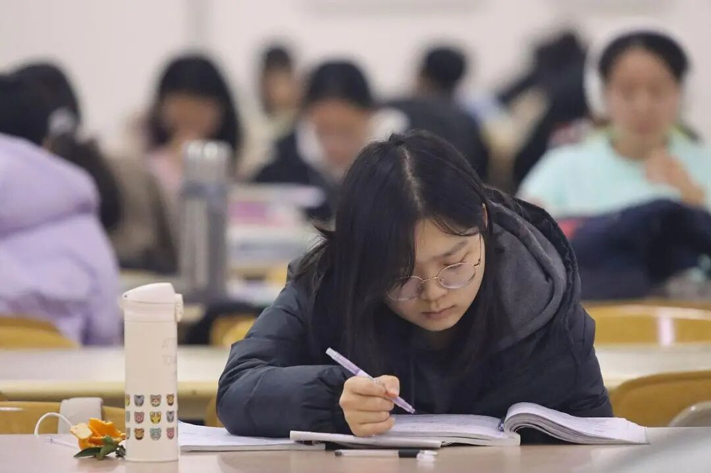
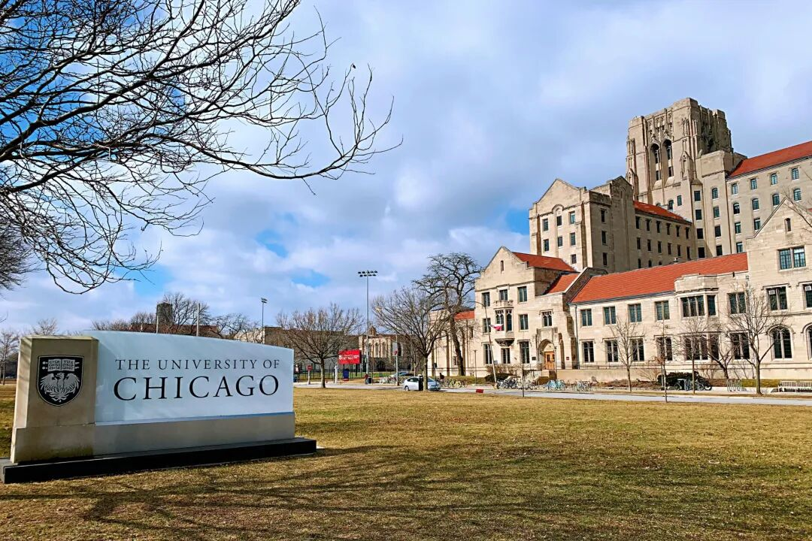
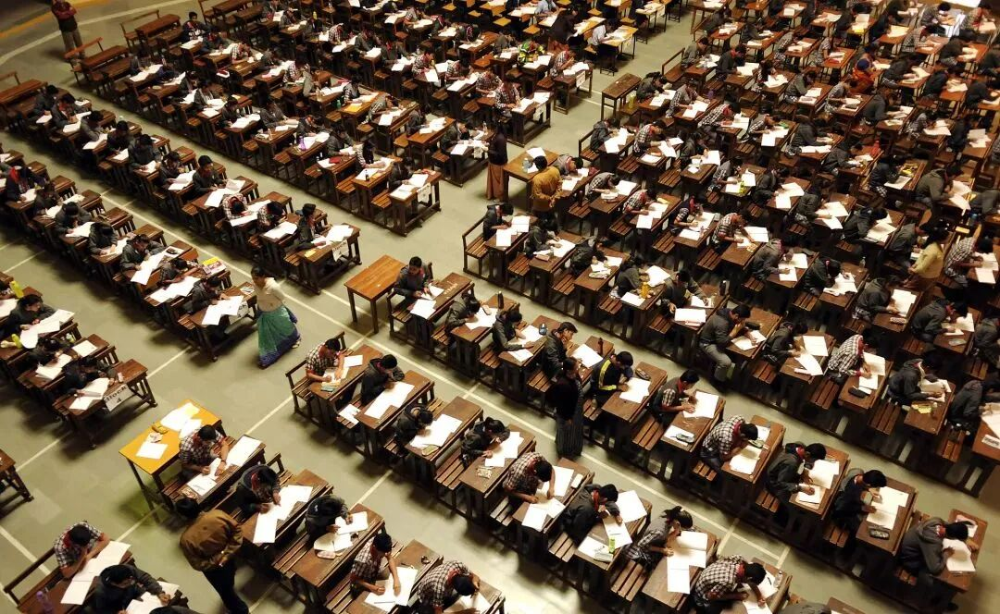
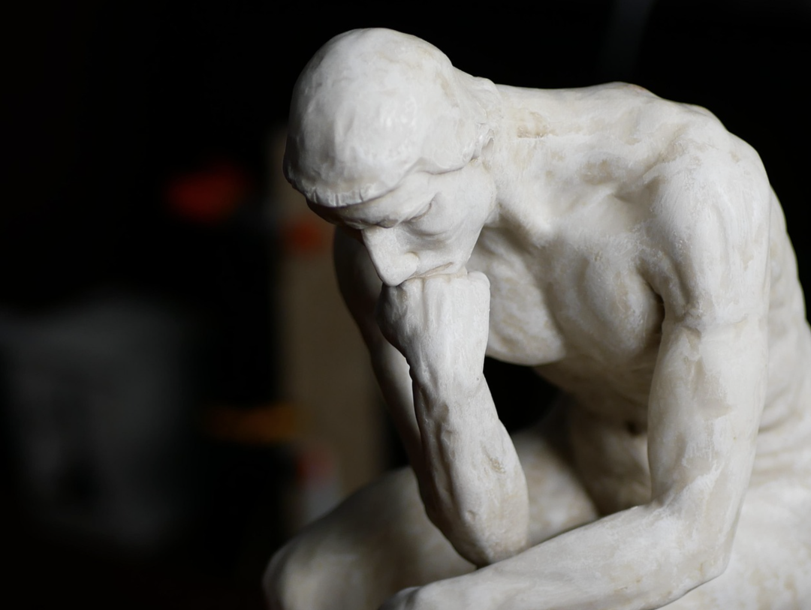
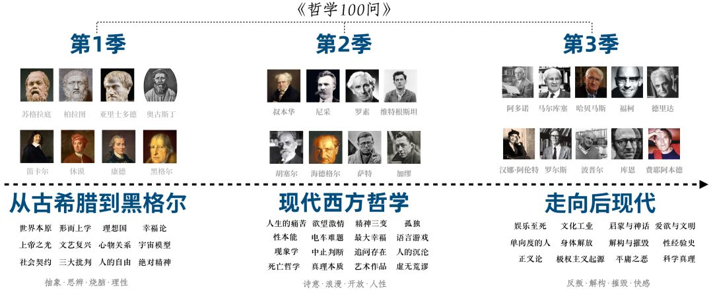
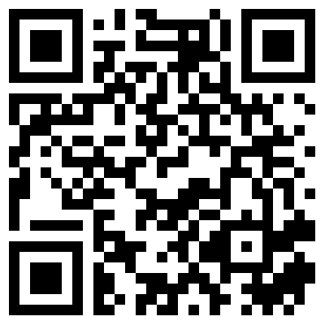
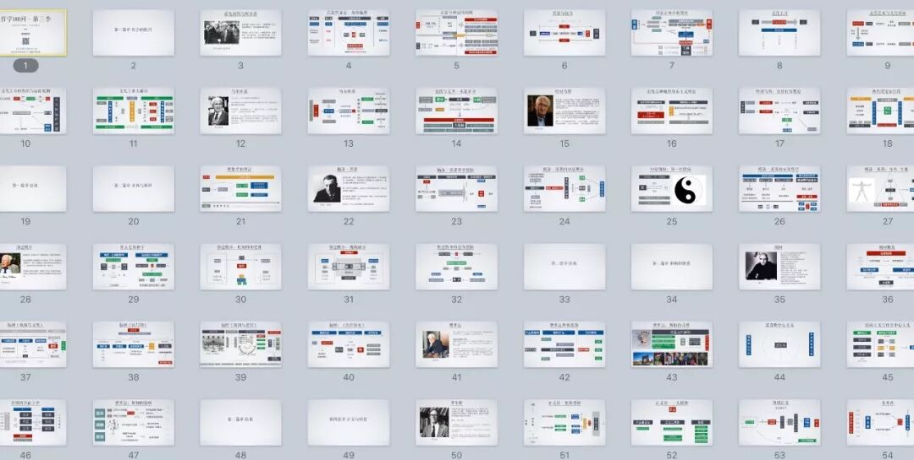

🎓 被“架空”的高考：中国学生和父母必须认清的大学真相
The Hollowed Out Gaokao The College Truth Chinese Students and Parents Must Face

作者丨Andrew Abbott芝加哥大学社会学系
翻译丨 田晓丽

高考临近结束，但社会各界对高考各种热点的关注方兴未艾burgeoning[ˈbɜːrdʒənɪŋ] adj. 蓬勃发展。高考语文作文，数学卷难度等话题纷纷成为了舆论opinion[əˈpɪnjən] n. 公众意见热点。并且，随着高考的成绩愈加尘埃落定settle[ˈsetl] v. 尘埃落定，人们开始将注意力转向大学择校、学习等方面。在近几年严峻就业形势与教育内卷化involution[ˌɪnvəˈluːʃən] n. 内卷的影响下，人们开始怀疑高等教育的意义，高等教育正在经历一场价值危机。
对此，芝加哥大学社会学系教授安德鲁·阿伯特认为：大学教育没有任何实用主义pragmatism[ˈpræɡmətɪzəm] n. 实用主义的目的，那些希望借名校光环而获得世俗成功的人，在入学时就已达到目的。他指出，无论世俗是否承认，一个学生成功与否，与选了什么专业、是否努力都没有联系，因为决定性decisive[dɪˈsaɪsɪv] adj. 决定性的因素都在大学“之前”或“之外”。是大学筛选screen[skriːn] v. 筛选了他们，而不是“培养”了他们。
同一学校毕业的学生之间的巨大差距gap[ɡæp] n. 差距，是由一些个人因素造成的，并不取决于学校的声望和入学难度。
既然如此，大学四年该如何度过？作者认为，教育的目的在于培养一种能力：对于我们观察到的任何事件和现象phenomenon[fɪˈnɒmɪnən] n. 现象，我们都能找到新的和不同的意义。通过赋予endow[ɪnˈdaʊ] v. 赋予更多的意义，通过扩充我们现在的意义范围，我们能使自己经历和体验更多的生活。在这个意义上，受教育是一个人能为不确定uncertain[ʌnˈsɜːrtn] adj. 不确定的未来做的最好准备。尽管“创造新意义”的意义并不被大部分人认可approve[əˈpruːv] v. 认可，但作者仍然坚持，对于名校学生来说，成功可能是容易的，而找到教育的意义却是困难的。由这一论断thesis[ˈθiːsɪs] n. 论断反观我们今天的教育，或许可以部分地解释人们日益内卷和焦虑的根源。
本译文translation[trænzˈleɪʃn] n. 译文原载《开放时代》2005年第5期，原文是Andrew Abbott教授2002年为本科新生所作的专题演讲。来自@文化纵横
在许多将要对你们说这句话的人中，我是唯一unique[juːˈniːk] adj. 唯一的一个将要在接下来的60分钟内一直不停地讲下去的人。
可以想象你们以前很少听过这样的演说oration[ɔːˈreɪʃn] n. 演说，以后也不会有多少机会听到。
对一个固定fixed[fɪkst] adj. 固定的题目做这样长度的正式演讲是一个相当19世纪的事情。
甚至在芝加哥大学这样的地方，这也是唯一的一个。
四年以后，当你们毕业graduate[ˈɡrædʒuət] v. 毕业的时候，你们将会很高兴地知道，演讲者被要求说不多不少恰好31.5分钟。
对我来说，这个演讲speech[spiːtʃ] n. 演讲不是件容易的事情。这是我这一生所做的第三个或者第四个类似similar[ˈsɪmələr] adj. 类似的的演讲。你们也不是那么简单的听众audience[ˈɔːdiəns] n. 听众。你们专注于focus[ˈfoʊkəs] v. 专注于新的室友，入学分级考试，还有“芝加哥生活”系列会议。你们的头脑被我们给你们读的那些无穷无尽的垃圾搞得疲惫不堪exhausted[ɪɡˈzɔːstɪd] adj. 疲惫不堪。你们的身体充满了肾上腺素adrenaline[əˈdrenəlɪn] n. 肾上腺素、复合胺而变得兴奋。你们的情绪也很不一样。有些人很迫切eager[ˈiːɡər] adj. 迫切的地想知道我要说些什么，有些人想它马上结束，有些人在看着坐在你前面两排的那个喋喋不休的家伙，有些人在感受这座哥特式建筑的庄严伟大，有些人在想，我，这个演讲者，有一个很大的鼻子。简而言之，你们是多样化diverse[daɪˈvɜːrs] adj. 多样化的的听众，我是个刚入门的演讲者，我们有一个小时的时间在一起，来想想教育的目的是什么。让我们开始吧。

确立establish[ɪˈstæblɪʃ] v. 确立你们自己的教育目的是很重要的，因为对芝加哥大学的学生而言，在未来的四年时间内没必要去学任何东西。有三个原因，越来越多的美国精英学校的学生们都察觉到perceive[pərˈsiːv] v. 察觉这些原因，至少我从我的教室里看到是这样的。让我们来看看。
第一，就世俗secular[ˈsekjələr] adj. 世俗的的成功而言，你们已经达到了。你们未来的收入会很高，因为你们进入了一所精英大学，你们将来工作的声望prestige[preˈstiːʒ] n. 声望可以很容易地被预测出来。每年有280万人从高中毕业，180万进入大学，其中4-6万人会进入像芝加哥大学这样的精英elite[eɪˈliːt] n. 精英大学。所以，你和你的同学们基本上代表represent[ˌreprɪˈzent] v. 代表了18岁这个年龄群的前2%。很明显apparent[əˈpærənt] adj. 明显的，你的将来会很不错。
当然，对你未来的预测predict[prɪˈdɪkt] v. 预测不是由大学的声望决定的，而是一些其他的因素，主要是那些决定你能否来这所大学的那些因素：个人才能，以前干过些什么，父母所提供的资源，包括社会资源和智力资源。在知道了这些之后，对于你未来的世俗成功的预测不会因你在大学里干些什么而有太大的改变alter[ˈɔːltər] v. 改变。另外，录取入学本身建立了一种自我实现的预期expectation[ˌekspekˈteɪʃn] n. 预期。因为你被这所大学录取admit[ədˈmɪt] v. 录取了，不管你做了什么和你在大学里干得怎么样，人们都会认为你很优秀。当然，我们知道，既然来了，你们也会毕业。毕业率也是大学之间竞争compete[kəmˈpiːt] v. 竞争的指标之一，这也是为什么不管你们有没有学到东西，学校都会确保你们顺利毕业。
所有这些告诉我，20年以后，几乎你们所有的人都会在全美国收入分布distribution[ˌdɪstrɪˈbjuːʃn] n. 分布的前25%。我对1975年从这个学校毕业的人做过一个调查survey[ˈsɜːrveɪ] n. 调查，那是一个在声望预期上不如你们的群体。他们个人收入的中位数median[ˈmiːdiən] n. 中位数是全美国收入中位数的5倍，他们家庭收入的中位数在全国家庭收入中位数分布图的93%的位置上。这就是你们的未来。而且我可以告诉你们，在5英里外芝加哥州立大学的孩子们的眼中，或者在位于芝加哥市中心的DePaul大学那些需要每天上夜校的成年人的眼中，这样的预期是极度奢侈luxury[ˈlʌkʃəri] n. 奢侈的成功。就全国范围scope[skoʊp] n. 范围的成功游戏而言，你们没有在这里学习的必要。游戏已经结束，你们已经赢了。
当然，你们中的很多人不关心别人：那些年轻的或不那么年轻的，努力往中产阶级bourgeois[ˈbʊrʒwɑː] n. 中产阶级爬上几个台阶的人们。你们对住在Winnetka而不是Downers Grove感兴趣interest[ˈɪntrəst] n. 兴趣。你也许想去Hamptons而不是Fire Island避暑。你们心目中的一个好假期vacation[veɪˈkeɪʃn] n. 假期也许是住在一个巴黎的酒店并且参观奥塞博物馆（Musee d’Orsay）而不是奥兰多（Orlando）的度假村并且去迪斯尼乐园玩一趟。“当然”，你会告诉我，“我在芝加哥大学的学习对这些事情会有很大的影响influence[ˈɪnfluəns] n. 影响”。它们可以决定determine[dɪˈtɜːrmɪn] v. 决定我是在全国收入的94%的位置还是99%的位置。好的大学教育也许不会影响我取得成功的大概机会，但是会影响我更具体concrete[ˈkɒŋkriːt] adj. 具体的的目标。
事实与此恰恰相反。我可以告诉你，没有任何证据evidence[ˈevɪdəns] n. 证据支持这第二个受教育的理由，并且有很多的证据反对它。首先，所有严肃的研究显示，一些大学层面的因素，像学校的声望和入学难度等对人们以后的收入会有影响，然而更多的变数variable[ˈveriəbl] n. 变数发生在同一所大学的内部，也就是说，同一所学校毕业的学生之间差别很大。这种内部差异disparity[dɪˈspærəti] n. 差异是由一些个人因素造成的，比如个人天分、资源、表现，还有你的主修科目，而不是学校的声望和入学难度。例如，我所看到的最好的全国数据datum[ˈdeɪtəm] n. 数据显示，大学的GPA增加1意味着大学毕业4年后收入多9%。就你所要多做的那么多工作而言，这不是一个很大的区别distinction[dɪˈstɪŋkʃn] n. 区别。
很抱歉，我用这些收入数据来烦你们，但是我希望能打破这样一个普遍prevail[prɪˈveɪl] v. 盛行的想法：在高等教育时努力学习能带来更多的世俗的成功。唯一一个跟未来的世俗的成功有点关系的变量，是你的主修专业major[ˈmeɪdʒər] n. 专业。但是在大规模的全国性研究中，这种影响大部分源自主修专业和职业career[kəˈrɪr] n. 职业之间的联系。真正对世俗的成功有影响的因素factor[ˈfæktər] n. 因素——你们都已经知道了——是职业。在全国性的调查中，职业和主修专业有比较紧密的联系liaison[liˈeɪzɑːn] n. 联系。但是在芝加哥大学，专业和你将来的职业并没有什么强的相关性correlation[ˌkɔːrəˈleɪʃn] n. 相关性。
以下是一些过去20年芝加哥大学校友的数据（随机random[ˈrændəm] adj. 随机的选择的10%）。主修数学的：20%从事engage[ɪnˈɡeɪdʒ] v. 从事软件开发与支持，14%大学教授，10%在银行和金融业，7%中小学教师，7%在从事非学术性研究，剩下的从事的职业很分散。主修物理的情况很类似，只是他们有更多成为工程师engineer[ˌendʒɪˈnɪr] n. 工程师，少一些从事银行和金融业。生物专业产生了40%的医生，16%的教授，11%的非学术性academic[ˌækəˈdemɪk] adj. 学术的研究者，剩下的1/3从事的职业很分散。很明显，这里有一些类似的路径pathway[ˈpæθweɪ] n. 路径。我们有一个生物专业的学生现在是个作家，另外一个是个音乐家，我们有两个数学专业的现在是律师lawyer[ˈlɔːjər] n. 律师，一个物理专业的成为了精神治疗医师。
来看看社会科学。学经济学economics[ˌiːkəˈnɒmɪks] n. 经济学的——在今天看来最有利于职业的专业——24%从事银行和金融业，15%在商业咨询，14%成为律师，10%在商业管理或销售，7%在计算机行业，另外的30%从事的职业很分散。历史专业的学生一般成为律师（占24%）和中学教师（占15%），但是其他的60%从事什么行业industry[ˈɪndəstri] n. 行业的都有。政治专业的也有24%的律师，7%的教授，7%的政府公务员official[əˈfɪʃl] n. 官员，20%的在各种商业部门中就职，剩下的很分散。令人吃惊的是，心理学psychology[saɪˈkɒlədʒi] n. 心理学专业的也有20%从事商业，11%成为律师，10%教授，剩下的很分散。因此，在社会科学里，很多人毕业后去了法学jurisprudence[ˌdʒʊrɪsˈpruːdns] n. 法学院或者商学院。这里照例有一些例外exception[ɪkˈsepʃn] n. 例外：一个主修社会学的成了保险精算师，两个主修心理学的在政府部门，一个学政治学的从事计算机业。
至于人文学科humanities[hjuːˈmænətiz] n. 人文学科，英语专业的大概是这样：11%在中小学教书，10%从事各种商业职业，9%在信息交流，9%的律师，5%的广告业，剩下的比较分散。主修哲学philosophy[fɪˈlɒsəfi] n. 哲学的人中，30%的成为律师，18%从事软件业。我敢说没人能解释为什么会这样。同样的，专业和职业的联系有些是明显evident[ˈevɪdənt] adj. 明显的的，有些不那么明显。我们有2个英语专业的学生现在是艺术家，还有一个是建筑师architect[ˈɑːrkɪtekt] n. 建筑师。我们有一个哲学专业的现在是农场主，另外2个成为了医生physician[fɪˈzɪʃn] n. 医生。
总而言之，有些许证据显示特定specific[spəˈsɪfɪk] adj. 特定的的专业会带你进入某些特定的行业，但是事实恰恰相反。杯子不是1/3满的，而是2/3是空的。主修生物的只有40%成为医生。最重要的是，我们校友的经历显示indicate[ˈɪndɪkeɪt] v. 表明，没有任何一条从某个专业到某个职业的路是被封死的。
从行业而非专业的角度perspective[pərˈspektɪv] n. 角度来看，所修课程和职业之间的弱关系就更加明显了。我们校友中最大的群体cohort[ˈkoʊhɔːrt] n. 群体是律师——占我的调查群体的12%。在律师中，16%来自经济学专业，15%政治学专业，12%历史学专业，7%来自哲学专业、英语专业和心理学专业，5%来自公共行政administration[ədˌmɪnɪˈstreɪʃn] n. 行政。以下这些专业中都至少有一个人成为律师：人类学anthropology[ˌænθrəˈpɒlədʒi] n. 人类学，艺术与设计，艺术史，生物，化学，东亚语言与文明，人文学综合研究，地理，地球物理，德国语言文学，数学，物理，宗教和人文，罗曼斯语言文学，俄语及其他斯拉夫语言文学，社会学。你们现在知道是怎么回事了。绝对没有什么专业是不能让你成为律师的。
医生这个行业怎么样呢？医生占我的调查中总人数的9%。医生的专业背景要集中一些，那是因为医学院medical[ˈmedɪkl] adj. 医学的对入学前所修课程的要求。60%的医生来自生物专业，17%来自化学chemistry[ˈkemɪstri] n. 化学专业。然而，至少有一个医生原来学的是人类学，古典文献classics[ˈklæsɪks] n. 古典学，英语文学（事实上有4个），历史学和科学哲学，数学，音乐，哲学，公共政策，罗曼斯语言文学。通往医生的主路highway[ˈhaɪweɪ] n. 主路很明显，但是这绝不是唯一的一条路。
校友中另外一个比较大的群体是银行和金融业finance[ˈfaɪnæns] n. 金融，其中，40%来自经济学专业，8%来自心理学专业，7%来自政治学专业，7%英语专业，6%数学专业，5%公共政策，4%历史学专业。同样，这里有一条主路，但是除此之外还有很多别的路。
很抱歉在这里给你们列出这些东西，但是我希望把这样一个观念从你们脑海中除去remove[rɪˈmuːv] v. 除去：你本科学的课程跟你将来的职业有联系。当然，这里有一些社会科学家所喜欢说的“选择性selective[sɪˈlektɪv] adj. 选择性的亲和力”，有些专业的学生会比别的人稍稍更有可能进入某些特定的行业。但是没有任何专业被排除出去，没有任何必然inevitable[ɪnˈevɪtəbl] adj. 必然的的路径存在。
所以，第二个以某种特定的方式努力strive[straɪv] v. 努力学习的理由，也是错误的，至少在这所大学里是这样。对于芝加哥大学任何专业的本科生而言，既然大学（的课程安排上）期望你们成为自然科学教授professor[prəˈfesər] n. 教授，那么没有任何行业是不可能的。你在这里干些什么不会以任何方式决定decide[dɪˈsaɪd] v. 决定你将来的职业。你离开的时候，可以自由liberty[ˈlɪbərti] n. 自由地选择任何此世的或彼世的职业，你不会仅仅因为主修跟那个职业没关系的课程而牺牲任何的可能性。
就在大学里的表现performance[pərˈfɔːrməns] n. 表现而言，没有任何全国性的数据显示大学里的表现水平对之后的收入有哪怕是很微小的影响。在我的校友数据中，在芝加哥大学的GPA和现在的收入income[ˈɪnkʌm] n. 收入之间绝对没有任何的联系。简而言之，你将来到底是住在Fire land还是Hamptons取决于depend[dɪˈpend] v. 取决于你在本科时的表现之外一些因素。
我希望我们现在已经否定negate[nɪˈɡeɪt] v. 否定了这样一个观念：你在这里干些什么以及你干得怎么样，和你将来能否取得世俗的成功没有任何的关系。你被这所大学录取这个事实，以及那些让这个事实实现的因素，已经确保ensure[ɪnˈʃʊr] v. 确保了你世俗的成功的总体水平。你成功的具体certain[ˈsɜːrtn] adj. 特定的程度取决于你的职业选择，而职业也跟你在这里干些什么以及干得怎么样没有关系。
第三个获得大学教育的理由是，它给你一些对未来很重要的综合的认知cognitive[ˈkɒɡnɪtɪv] adj. 认知的能力。因为这是我自己过去论证得最多的一个论点，我需要格外小心地去推翻overturn[ˌoʊvərˈtɜːrn] v. 推翻它。

这个论点是：大学教你的不是具体的学科知识，而是一些在将来——研究院中，工作中还有休闲中——能运用的综合comprehensive[ˌkɒmprɪˈhensɪv] adj. 综合的能力。大家都知道，大学里学到的具体知识并不重要。所有30岁以上的人都知道，就内容而言，大概5年内你会忘掉绝大多数你本科时学的东西。但是，那些能力不会丢掉lose[luːz] v. 失去。可能它们不好测量measure[ˈmeʒər] v. 测量，它们的影响也不好被证明，但是它们是你能从大学里得到的最主要的东西。
人们首先想到的是基本的语言和数字numeracy[ˈnjuːmərəsi] n. 计算能力能力，高级的读写能力能让你更好地应对知识社会，良好的数字能力能让你做出理性的财务选择，这些在一个又一个的专业领域内被证明是有用的。除此之外，还有一些更加高级的能力：批判critical[ˈkrɪtɪkl] adj. 批判的阅读能力能让你识破报纸和股票章程中的谎言，分析能力让你在工作中形成复杂的行为程序，写作能力把你的想法很清楚地表达给你的同事，独立思考让你不受别人观点的影响，还有终生学习的能力让你能够处理工作和生活中的变化。
证据显示，我们自己的校友，其他同等学校的校友，以及全国校友的抽样，都坚信conviction[kənˈvɪkʃn] n. 坚信这些能力是他们本科教育最重要的东西。校友们意识到，本科学到的具体知识总是会被忘记的，但是他们强调他们保留retain[rɪˈteɪn] v. 保留了这些在生活的各个方面都会用到的综合能力。
但是并没有多少证据证明大学阶段的学习产生produce[prəˈdjuːs] v. 产生了这些能力。我们知道在大学四年的时间内，人们获得这些能力，但是我们并不清楚clear[klɪr] adj. 清楚的是大学的教育产生了它们。首先，能够上大学，尤其是精英大学的年轻人，本身itself[ɪtˈself] pron. 本身就是跟不能上大学的人不一样的。在我们的分析中，如果不能对这种差别进行统计上有效的控制control[kənˈtroʊl] n. 控制的话，大学教育显示出来的影响可能实际上是源自于能上大学和不能上大学的人本身原有的差别。
在这个选择性偏差bias[ˈbaɪəs] n. 偏差效果之外，还有另外一个无法度量的变量的问题。我们归功于大学教育的变化可能实际上衍生derive[dɪˈraɪv] v. 衍生于别的东西。比起没有上过大学的人，大学毕业的学生更有可能承担undertake[ˌʌndərˈteɪk] v. 承担更有挑战性的工作。他们有更多的时间接触contact[ˈkɒntækt] n. 接触聪明的人。他们生活在一个认知能力被明确地重视的环境environment[ɪnˈvaɪrənmənt] n. 环境。综合能力的差别可能是由这些东西产生generate[ˈdʒenəreɪt] v. 产生的，而不是大学的课堂教育。另外，上过大学的和没上过大学的人在很多技能上并没有什么大的区别，能力的增加可能只是成熟mature[məˈtʃʊr] adj. 成熟的的结果。你的能力得到提升enhance[ɪnˈhæns] v. 提升只是因为你多活了几年。
大学教育对于认知能力的发展很重要这种看法成立与否完全依赖于rely[rɪˈlaɪ] v. 依赖我们是否可以在统计上解决选择性偏差和无法度量的变量这两个问题。唯一的非统计解决途径是进行控制实验experiment[ɪkˈsperɪmənt] n. 实验。但是没有人会把一千个像你们这样聪明并且有抱负ambition[æmˈbɪʃn] n. 抱负的年轻人送到大学之外的某个一样有挑战性的但是没有课堂教育的环境中去。设想在未来的四年内，你们系统地在商业公司、非盈利机构、政府部门等处进行实习internship[ˈɪntɜːrnʃɪp] n. 实习，在那些地方，你们不用上课，但是你们还是能够以同样的方式获得那些能力：向你的朋友或者工友请教该怎么做，读读工作手册，或者去参加一些特定技能的课程。你们可能还是住在宿舍dormitory[ˈdɔːrmɪtɔːri] n. 宿舍之类的地方。你们可能还是需要业余leisure[ˈliːʒər] n. 休闲生活。但是没有课堂指导。然后我把你们，除了少数几个领域——硬科学和工程——递交submit[səbˈmɪt] v. 提交上去，你们会跟在这里受了四年大学的课堂教育一样，为申请法学院或者商学院做好了准备。
从统计statistic[stəˈtɪstɪk] n. 统计数据来看，其他的因素导致了大学教育的结果是很有可能的。让我总结一下。首先，虽然有一些证据显示大学教育在某些领域有一些小的影响，但是没有可靠的证据显示大学教育对口头oral[ˈɔːrəl] adj. 口头的表达能力，书面交流能力，综合思考能力，智力上的反应能力有直接的影响（20%的正作用）。第二，的确有证据显示大学教育对综合口头表达能力和综合数学mathematical[ˌmæθəˈmætɪkl] adj. 数学的能力有正面的作用（10-15%），但是这更像是“要么使用这些本来就有的能力，要么丢掉”的结果，而不是学习到新的技能。大学只是让你们一直使用utilize[ˈjuːtəlaɪz] v. 使用这些在高中已经学到的能力，而很多的工作并不会这样。所以那些上大学的人保持了这些能力，而那些去参加工作的人退步regress[rɪˈɡres] v. 退步了。最后，大学教育在培养批判性思维critique[krɪˈtiːk] n. 批判上的确有一些作用。然而，有关的研究往往没有控制年龄，所以很难把它的作用跟纯粹的年龄增长带来的成熟区分distinguish[dɪˈstɪŋɡwɪʃ] v. 区分开来。
这些统计statistical[stəˈtɪstɪkl] adj. 统计的结果不全是从精英大学得来的，而是来自各个不同水平的高等教育。但是我们还是可以以此推论，大学教育对于认知能力的提高没有很大的直接direct[dəˈrekt] adj. 直接的作用。也就是说，你来这里的时候，就是很聪明的人，只要你用你的智力intellect[ˈɪntəlekt] n. 智力干点什么——具体干什么并不重要——你走的时候仍旧会是聪明的人。
所有这些统计的结果都是上大学和不上大学的区别，也就是在比较大学教育和低层次level[ˈlevl] n. 层次的，没有挑战力的工作或者失业。没有人明确explicit[ɪkˈsplɪsɪt] adj. 明确的地比较过大学教育和其他智力上有挑战性的活动。毫无疑问doubt[daʊt] n. 疑问，我们一直都在做关于这个问题的实验。关于美国前40名的精英大学的数据显示，这些学校的学生用在学习上的时间差别difference[ˈdɪfrəns] n. 差别很大。在布朗大学这样的地方，你有可能在整个本科期间给报纸做全职fulltime[ˌfʊlˈtaɪm] adj. 全职的作家，课业不过是或多或少不相干的事情。也有像芝加哥大学这样的地方，这是完全entirely[ɪnˈtaɪərli] adv. 完全不可能的。当然，在同一所学校里，有的人很努力地学习，有的人却把同样的智力用于交响乐团orchestra[ˈɔːrkɪstrə] n. 交响乐团、创造性写作或者喜剧。但是没有人测量过这些课业学习之外的智力活动对认知能力的影响。也没有人检测这个可能是错误的预测forecast[ˈfɔːrkæst] n. 预测：在大学里做很多课上课下作业的学生在以后会比较成功或者认知水平会比较高。
所以，第一个反对“大学教育会教会你一些在你以后的生活中很重要的能力”的理由如下：（1）这些能力并不是独立independent[ˌɪndɪˈpendənt] adj. 独立的于你自然的成熟而产生的；（2）还不是很清楚是不是大学教育education[ˌedʒuˈkeɪʃn] n. 教育产生了这些能力；（3）没有证据proof[pruːf] n. 证据证明没有其他的智力活动也能产生这些能力。
现在让我们从另外一个角度来看看这种认为“认知能力”对以后的生活有决定性crucial[ˈkruːʃl] adj. 关键的的影响的观点。你们可能已经猜到guess[ɡes] v. 猜到，你们将在研究院，而不是大学本科的时候，学习到关于如何成为一个律师，医生，商人的知识。你们中将来成为医生的人也会发现，生物化学和其他类似的精密precision[prɪˈsɪʒn] n. 精密科学知识对于行医来说既没有什么意思，也没什么用。事实上，直到20世纪，医学院才要求有本科的理科背景background[ˈbækɡraʊnd] n. 背景。而且，在某些国家，医学、法学和商学是本科学位degree[dɪˈɡriː] n. 学位，而不是研究院学位。这也说明，尽管校友们那样认为，大学里学到的技能skill[skɪl] n. 技能对将来的职业生活其实并没那么重要。
但是让我们走得更远一些。把标准的大学本科的技能列一个单子list[lɪst] n. 列表，让我们看看你们大部分人在追求的职业是不是真的要运用这些能力。这些能力是批判思维能力、分析analytic[ˌænəˈlɪtɪk] adj. 分析的推理能力、终生学习能力、独立思考能力，还有写作能力。这些是在校友研究中出现的5大能力，在其他同等精英学校研究和全国national[ˈnæʃnəl] adj. 全国的研究中它们也是最主要的。这些东西真的对从事法律，医学，商业commerce[ˈkɒmɜːrs] n. 商业，还有学术那么重要吗？
律师。精英律师attorney[əˈtɜːrni] n. 律师的真正活动是去找生意，签合同，领导法律团体，还有监督年轻的同事。年轻的合伙人partner[ˈpɑːrtnər] n. 合伙人需要知道怎么写作，需要分析的技能。但是太多的批判性思维会让他们陷入麻烦之中，独立思考能力同样也是很可疑dubious[ˈduːbiəs] adj. 可疑的的。对非精英律师来说，他们做的大部分工作是财产property[ˈprɒpərti] n. 财产或者其他财富的转移，离婚，遗嘱，合伙，还有偶尔性的个人伤害案件，所有这些都是他们在离开法学院之后才学会的，很多时候是文书人员教会他们的。所有好的诉讼员策略都不是在课堂学会的，有戏剧drama[ˈdrɑːmə] n. 戏剧学习的背景比法律学位更有用。对法律本身有很深的批判性的了解understand[ˌʌndərˈstænd] v. 理解只对法学教授和很少几个法官有用。所以，很难说对律师而言那五大认知能力比跟人们处理好关系，团体合作，陈述presentation[ˌpriːzenˈteɪʃn] n. 陈述清楚并简单化问题并把它向不同的人群说明等能力更加重要。
在商业business[ˈbɪznəs] n. 商业中，情况多多少少是一样的。你们中从商的人永远不会像我或其他一些教授那样写作writing[ˈraɪtɪŋ] n. 写作。你们将不得不把事情尽量简化simplify[ˈsɪmplɪfaɪ] v. 简化，你们也一样需要简单化和清楚化事情。你们同样需要跟别人好好合作，把你的独立性搁在shelve[ʃelv] v. 搁置一边。正如Bob Jackall杰出outstanding[aʊtˈstændɪŋ] adj. 杰出的地显示的那样，你们需要严格控制你的批判性思维。综合分析能力对你们会很重要，但是，正如Jackall和其他管理人员所说的，对于商业管理人员，关键的分析能力是解码decode[diːˈkoʊd] v. 解码在各种组织中流动的时刻变化的有偏差的信息，以正确地理解别人。这些是你在大学里绝对absolute[ˈæbsəluːt] adj. 绝对的学不到的。我们的课本不是由希望欺骗deceive[dɪˈsiːv] v. 欺骗引导你去做他们想你做的事情的人写的。
医生会怎么样呢？绝大多数的医生工作，跟法律工作一样，都是例行公事routine[ruːˈtiːn] n. 例行公事。每天做一些标准化standardize[ˈstændərdaɪz] v. 标准化程序化了的事情。医生比律师和商人更需要终生lifelong[ˈlaɪflɒŋ] adj. 终生的学习。高级律师可以向他们的手下subordinate[səˈbɔːrdɪnət] n. 下属的律师学习新的法律，医生却需要自己不断学习。但是，除非他们是学院派scholar[ˈskɒlər] n. 学者医生，他们跟商人一样不需要写作。复杂的分析性思考也不是常常那么必要necessary[ˈnesəseri] adj. 必要的。医学内部的分工division[dɪˈvɪʒn] n. 分工把他们的分析控制在很小的范围内，他们只需要处理跟他们专业相关的病人。不一样的是，批判地去听的能力却是很关键vital[ˈvaɪtl] adj. 关键的的。对于行医的医生来说，理解另一个人想告诉你些什么的是最基本fundamental[ˌfʌndəˈmentl] adj. 基本的的能力。但是对此我们在大学里并没有系统systematic[ˌsɪstəˈmætɪk] adj. 系统的的教育（在医学院也只有很少的正式教育）。
最后，教授们又怎么样呢？他们需要这些能力吗？你们现在可能已经发现了，大家都在说的这些“主要的认知能力”其实是精英学术界academia[ˌækəˈdiːmiə] n. 学术界的东西（当然，我应该说“我们自己”）。在学术界，批判性思维，分析能力，写作，独立性和自学都是被鼓励encourage[ɪnˈkɜːrɪdʒ] v. 鼓励而且很重要的。在某种程度上，这个著名的列表catalog[ˈkætəlɒɡ] n. 目录其实是学术界的列表。现在我要证明prove[pruːv] v. 证明，即使在学术界这些能力也不是那么核心。大部分在非精英学校任教的教授有着沉重heavy[ˈhevi] adj. 沉重的的教学担子，他们要去教没有学习动力的学生，很少用到这些能力。即使没有这些论证argument[ˈɑːrɡjumənt] n. 论证，你们大部分人在将来的职业生活中还是不需要这些在高等教育中强调的能力。最明显的例子instance[ˈɪnstəns] n. 例子是写作。我们芝加哥大学对写作极其extremely[ɪkˈstriːmli] adv. 极其强调。但是事实是，你们中大部分majority[məˈdʒɒrəti] n. 大部分人在你以后的生活都不会怎么写作。你要写的大部分报告report[rɪˈpɔːrt] n. 报告，法律意见，公司说明书等都是由委员会完成的，而且它们是写来告诉听众他们想要知道的事情，或者能说服他们的东西，而不是逻辑上正确的东西。
所以我们不仅有很好的理由来怀疑suspect[səˈspekt] v. 怀疑“大学教育教给你在你将来的生活中会很重要的综合认知能力”这个说法的头半部分，而且同样有很好的理由来怀疑这个观点的后半部分。我们不能证明大学教育是产生那些被认为是重要significant[sɪɡˈnɪfɪkənt] adj. 重要的的那些能力的原因，而且它们可能也没那么重要。
让我再来反驳这种“认知能力”论点的另外一个变异variant[ˈveriənt] n. 变体。有一些特定的文献构成文化教养cultivation[ˌkʌltɪˈveɪʃn] n. 修养，博雅（liberal arts）教育的责任就是把这些文献的很大一个部分教给学生。我称这个为“共同语言lingua[ˈlɪŋɡwə] n. 语言 （lingua franca）”观点。因为不管学生们现在在做什么，这样教授的经典classic[ˈklæsɪk] adj. 经典的是受过教育的人们之间的一种“共同语言 （lingua franca）”。这种“共同语言（lingua franca）”观点起源于19世纪像牛津，剑桥，巴黎高等师范学院等这样的欧洲精英学术机构institution[ˌɪnstɪˈtuːʃn] n. 机构。当社会精英在这些地方修课的时候，他们背诵recite[rɪˈsaɪt] v. 背诵了大量的希腊文，拉丁文的诗歌和散文，他们在议会演讲和俱乐部对话中引用这些词句。这些引用起到标识identify[aɪˈdentɪfaɪ] v. 识别精英的秘密代码的作用。它们也产生文化cultural[ˈkʌltʃərəl] adj. 文化的共同语言。你不需要抽象abstract[ˈæbstrækt] adj. 抽象的地苦苦思索愤怒。
你可以提到mention[ˈmenʃn] v. 提到Achilles在他的帐篷里的愤怒。事实上，我记得有不少人想象越战是美国版的雅典人去西西里的远征expedition[ˌekspəˈdɪʃn] n. 远征，如修昔底德（Thucdides） 不朽的词句所说的那样：
κατὰ πάντα γὰρ πάντως νικηθέντες καὶ οὐδὲν ὀλίγον ἐς οὐδὲν κακοπαθήσαντες πανωλεθρίᾳ δὴ τὸ λεγόμενον καὶ πεζὸς καὶ νῆες καὶ οὐδὲν ὅτι οὐκ ἀπώλετο, καὶ ὀλίγοι ἀπὸ πολλῶν ἐπ’ οἴκου ἀπενόστησαν. ταῦτα μὲν τὰ περὶ Σικελίαν γενόμενα. (Thucydides 7.87.6)
因为他们全军覆没annihilate[əˈnaɪəleɪt] v. 歼灭，极尽痛苦；他们的覆没，如古谚proverb[ˈprɒvɜːrb] n. 谚语所云，是全盘的覆没，海军、陆军——一切尽赴黄泉。几无还乡者。西西里事件以此终结。
是的，是这样的。如果你不懂希腊文的话，它什么也不是。经典canon[ˈkænən] n. 经典只有在每个都应该懂它的人都这样认为的时候才能称为经典。100年以前，你们中半数half[hæf] n. 半数的人会被要求懂得我刚才说了些什么（可能我也被要求懂）。但是在我们现在的教育体系里，关于什么是经典，并没有一致consensus[kənˈsensəs] n. 共识的意见，所以并没有经典可言。事实上，在美国目前有关于范例和优秀人物的共同文化，但是他们大部分来自体育界，娱乐界和时事current[ˈkɜːrənt] n. 时事中。简而言之，并没有学术的或者高雅refined[rɪˈfaɪnd] adj. 高雅的文化的经典。即使有任何意义上的经典，教授们也不是这方面的专家expert[ˈekspɜːrt] n. 专家。
可能我们唯一能保留reserve[rɪˈzɜːrv] v. 保留的就是我称之为“智力训练”的观点。在用一系列的大规模实习来代替substitute[ˈsʌbstɪtuːt] v. 代替大学教育的讨论中，还有关于全职为报纸写稿可能跟在课堂学习一样有智力上的挑战性的论述中，这个观点很明显。“智力intellectual[ˌɪntəˈlektʃuəl] adj. 智力的训练”观点认为只要你在接下来的四年时间内干点智力上有挑战性的事情，你具体做什么并不重要。因为任何智力上的训练都会发展develop[dɪˈveləp] v. 发展，至少保持你的认知能力。这样的训练training[ˈtreɪnɪŋ] n. 训练在大学教育中是很容易得到的，你在大学里可以利用它。这就跟去下一个街区block[blɒk] n. 街区的智力健康俱乐部而不是开车去芝加哥市中心的智力训练俱乐部一样。
“智力训练”的观点是19世纪牛津和剑桥改革的核心core[kɔːr] n. 核心。没有人认为学习希腊文会直接directly[dəˈrektli] adv. 直接地帮你管理印度。但是他们认为一个可以真正掌握master[ˈmæstər] v. 掌握希腊文或者矢量微积分的人可以学习任何管理印度所需要的知识。在有了很大范围和很高难度的学习经历之后，一个人可以胜任competent[ˈkɒmpɪtənt] adj. 胜任的任何事情。这个观点导致完全忽视overlook[ˌoʊvərˈlʊk] v. 忽视学习内容。很多英国的殖民colonial[kəˈloʊniəl] adj. 殖民的统治官员对不定过去时而非中尉感到更加舒服。但是作为一种纯粹pure[pjʊr] adj. 纯粹的的智力训练，这是个很好的主意。不幸的是，正如这个例子和我之前对职业的讨论清楚显示display[dɪˈspleɪ] v. 显示的那样，以后的工作也许并不是智力处理的问题。所以这个智力训练的观点可能根本就是不相关irrelevant[ɪˈreləvənt] adj. 不相关的的。
让我在接下来的时间内转向shift[ʃɪft] v. 转变什么是教育的目的之前，先总结一下哪些不是教育的目的。我首先向你们展示，大体上你们世俗worldly[ˈwɜːrldli] adj. 世俗的的成功并不取决于你在大学的学习——这些成功你们其实已经能确保得到了。第二，你们具体的成功程度是你离开这里之后职业选择choice[tʃɔɪs] n. 选择的结果，跟大学没什么关系。第三，没有证据显示大学给了你们别的地方不能给的认知能力capability[ˌkeɪpəˈbɪləti] n. 能力。第四，那些被看重value[ˈvæljuː] v. 重视的综合能力可能事实上在职业教育和职业生涯中并不是最重要的。也没有任何理由去相信经典，因为所谓的经典在美国社会是不存在exist[ɪɡˈzɪst] v. 存在的。在整个讨论中我唯一支持support[səˈpɔːrt] v. 支持的看法是：大学教育提供了一种形式的智力训练。但是很多其他的活动也有这个功能function[ˈfʌŋkʃn] n. 功能。
所以，没有任何实用practical[ˈpræktɪkl] adj. 实用的的理由让你来接受大学教育，学习你的课业，或者选择一个专业。它不能带给你任何其他途径channel[ˈtʃænl] n. 渠道不能给你的东西。所以忘掉forget[fərˈɡet] v. 忘掉所有这些关于受大学教育的工具主义的理由。
在这里或其他任何地方受教育的理由reason[ˈriːzn] n. 理由，是受教育比不受教育要好。教育本身就是好的。不是因为它能带给你任何东西。不是因为它是获得其他东西的途径。注意到，这个说法暗示着，“教育的目的”这个词语是荒谬absurd[əbˈsɜːrd] adj. 荒谬的的。教育不是那种有可预测predictable[prɪˈdɪktəbl] adj. 可预测的的目的的东西。除了它本身，它没有目的可言。
否定denial[dɪˈnaɪəl] n. 否定教育的目的有两方面的意思。第一是关于未来。说教育没有目的是指我们不能期望expect[ɪkˈspekt] v. 期望现在的教育给我们的将来带来些什么，不管是更多的教育还是完完全全别的东西。第二是关于现在。说教育没有目的purpose[ˈpɜːrpəs] n. 目的，是指我们不能用现在的教育来获得它之外的任何东西。
让我从第一点开始。我已经证明demonstrate[ˈdemənstreɪt] v. 证明，如果教育有特定的目的，它们并不在于未来。就我们可以度量gauge[ɡeɪdʒ] v. 度量的东西而言，课堂学习意义上的大学教育跟你将来的成功甚至你的认知能力没有关系。即使把我之前的社会科学取向orientation[ˌɔːriənˈteɪʃn] n. 取向放在一边，来进行一些理论上的思考，结果也是一样。理论上，说大学教育有关于将来的目的也存在着问题：当未来到来的时候，这个世界，我们关于这个世界的知识，以及我们思考问题的方式，都发生了根本radical[ˈrædɪkl] adj. 根本的性的变化。不管是哪个领域domain[doʊˈmeɪn] n. 领域，它的事实，理论以及我们用来理解它的概念都会发生永久性的变化。医学，法律，商业，物理，建筑，农业，社会工作……在你毕业后第十年的同学聚会reunion[ˌriːˈjuːniən] n. 重聚上，在任何你能想到的领域，它的基本知识都会跟你毕业的时候很不一样。不仅仅是事实和内容不同，这些领域里用到的深层underlying[ˌʌndərˈlaɪɪŋ] adj. 深层的技能也会以惊人的速度变化。

当我用消极negative[ˈneɡətɪv] adj. 消极的的而非积极的语言来描述这种变化的时候，情况显得更加清楚。知识的变化并不是以某种虚幻illusory[ɪˈluːsəri] adj. 虚幻的的形式自动发生的，而是因为人们预想了它们的到来。因此，人们有了新的发现discovery[dɪˈskʌvəri] n. 发现是因为他们在寻找新的发现。他们发展新的理论theory[ˈθɪri] n. 理论和方法是因为他们想取代他们觉得不够令人满意的旧的理论。但是不管我们是谁——医生，律师，农场主或者会计师——如果我们想要有变化的话，我们必须能够想象visualize[ˈvɪʒuəlaɪz] v. 设想用新的方式来看待这个世界并在这个世界做事情。
所以我们的教育不能由掌握学科discipline[ˈdɪsəplɪn] n. 学科或者专业知识或者综合能力组成。当你掌握并实质化这些东西——把它们变成固定的，具体的僵化rigid[ˈrɪdʒɪd] adj. 僵化的的事例——你们将不能想象它们被取代。不，要想能够改变和更新renew[rɪˈnjuː] v. 更新你已有的观念，你必须掌握能让你跳出来看这些观念的东西。这个东西就是教育。
这个论点否定了那种认为教育的目的是给你一些让你能在飞快rapid[ˈræpɪd] adj. 快速的变化的世界里生存的技能的观点。那是因为能力本身也在变化。仅仅在半个世纪halfcentury[ˈhæfˌsentʃəri] n. 半个世纪之前，写作能力要比现在重要得多。现在我们应该更进一步在第三个层面来谈谈正式formal[ˈfɔːrml] adj. 正式的教育。每次我们更进一步，我们对未来谈得越来越少，而对知性的连续性——头脑的一种持久enduring[ɪnˈdʊrɪŋ] adj. 持久的的特性，一种智力上的习惯——谈得越来越多。我们转向不那么受时间限制的对教育这个概念的理解，来远离历史的变化给教育的理解造成的陷阱trap[træp] n. 陷阱。我们从考虑未来转向考虑关于现在的比较持久的特性attribute[əˈtrɪbjuːt] n. 属性。简而言之，甚至在我们进行理论上的讨论discussion[dɪˈskʌʃn] n. 讨论的时候，我们也没有发现教育对于未来有什么目的。所有关于教育的比较严肃的概念都根植rooted[ˈruːtɪd] adj. 根植的于一种比较持久的状态——存在于自我永久的现在。
在否定教育有未来的目的的同时，我也否定了教育意味着学习一些特定particular[pərˈtɪkjələr] adj. 特定的的内容。在关于“共同语言（lingua franca）”的讨论中，我已经抛弃abandon[əˈbændən] v. 抛弃了这个论点。但是知识的不停变化（从正面来看，永远需要新的思想）进一步推翻overthrow[ˌoʊvərˈθroʊ] v. 推翻了认为教育的目的是学某些具体内容的看法。你们不是在巢里张着嘴等着老师来喂已经半消化digest[daɪˈdʒest] v. 消化了的食物的小鸟。教育并不在于consist[kənˈsɪst] v. 在于内容。它甚至不在于能力ability[əˈbɪləti] n. 能力。它是一种心灵mental[ˈmentl] adj. 心灵的的习惯或者思维方式。
在已经抛弃了认为教育对于未来有什么目的的看法之后，我现在谈谈我的另外一个主张claim[kleɪm] n. 主张：教育对于现在而言，也没有教育本身之外的什么目的。我不想跟之前那样以否定的方式来论证reasoning[ˈriːznɪŋ] n. 推理这个观点，而是想论证，我所定义的教育本身就是很好的东西。如果教育本身就是好的，我们不需要关心concern[kənˈsɜːrn] v. 关心它是否还有其他的作用。那些作用只是附加additional[əˈdɪʃənl] adj. 附加的产品，因此并没有实质性的意义。
我所说的教育是指能为事件或者现象赋予confer[kənˈfɜːr] v. 授予越来越复杂/深刻和广阔的意义的能力。当我们读一段文字的时候，我们称从之引伸出来新的意义为“解释interpretation[ɪnˌtɜːrprɪˈteɪʃn] n. 解释”。我们做数学的时候，称这种意义的给予为直觉intuition[ˌɪntuˈɪʃn] n. 直觉和证明。我们读历史的时候，我们称之为对历史背景context[ˈkɒntekst] n. 语境的感觉。我们做社会科学研究的时候，我们称之为社会学的想像力imagination[ɪˌmædʒɪˈneɪʃn] n. 想象力。在所有的这些领域，受教育是培养一种给我们观察observe[əbˈzɜːrv] v. 观察到的任何事件和现象找到新的和不同的意义的能力。我们有很多用来这样做的标准的程序——解释范例paradigm[ˈpærədaɪm] n. 范式，诠释方法，理论范式，调查方法等。但是教育不是这些范例，方法或者范式，而是本能instinct[ˈɪnstɪŋkt] n. 本能地去寻找新的意义，质疑旧的意义，不停地跟事件，现象和文本已有的意义做斗争的习惯。我们能教你这些方法和范例example[ɪɡˈzæmpl] n. 范例，但是不能教你这种习惯。这是你必须自己去找的东西。
这样看来，教育看起来似乎并没有什么。“我已经能做到了，”你说。“意义”，你说，“我能给你的上个段落paragraph[ˈpærəɡræf] n. 段落10种意义，没问题。”另外，你说，“为什么这是个好事？谁需要这些新的意义？这些只是飘在上面的烟，让我们去找真正的猎物prey[preɪ] n. 猎物。”
首先，我不确定你们中有很多人能创造create[kriˈeɪt] v. 创造新意义。因为很多人正坐立不安fidget[ˈfɪdʒɪt] v. 坐立不安地想我到底什么时候才能讲完。你们不能安静地坐55分钟好好想想你们人生lifetime[ˈlaɪftaɪm] n. 一生最重要的问题之一。但是如果在过去的40分钟中，你们已经想完你们能想到的所有关于教育的新的想法，也许我们最好还是抛弃discard[dɪˈskɑːrd] v. 抛弃——至少在这个意义上——你们已经受好教育的观点。
但是更重要的是为什么给事情赋予无穷infinite[ˈɪnfɪnət] adj. 无穷的的意义是件好事。答案是：通过赋予更多的意义，通过扩充我们现在的意义范围，把更多的复杂的，抽象的，有时候还有雄心的东西含括include[ɪnˈkluːd] v. 包含到我们的世界来，我们能够使自己在现在的意义上经历更多的生活。一个受过教育的人比没受过教育的人在同一个时期能体验experience[ɪkˈspɪriəns] v. 体验更多。这并不是说没有受过教育的生活有什么内在inherent[ɪnˈhɪrənt] adj. 内在的的本质的不好的或者有缺陷的地方。没有受过教育的人的生活也同样有尊严dignity[ˈdɪɡnəti] n. 尊严。但是如果有机会而你没有利用它来扩充你的经历的话，那是很愚蠢foolish[ˈfuːlɪʃ] adj. 愚蠢的的。教育的本质就是它是使我们能这样做的很核心central[ˈsentrəl] adj. 核心的的手段。
让经历变得更加复杂complex[kəmˈpleks] adj. 复杂的并不意味着你必须扔掉它最核心的简单的版本。你的确不能无穷尽地填充fill[fɪl] v. 填充你的头脑——它的能力是有限的。另外，关于你们的教育，你们要做的一个很重要的决定是广度breadth[bredθ] n. 广度和深度之间的平衡。因为广度也是扩充expand[ɪkˈspænd] v. 扩充经历的一种方式。复杂化complicate[ˈkɒmplɪkeɪt] v. 使复杂不是产生意义的唯一途径。
因此，我认为教育本身就是好的，因为它在时间和空间space[speɪs] n. 空间上扩充经历。教育意味着学会如何安排arrange[əˈreɪndʒ] v. 安排你们所知道的有限的事情，它们不同层次的抽象和细节，技能，数据，事实和理论的综合，然后最大化你在现在可能经历的意义。不管你时间和空间上的现在是什么，通过给游戏更多的意义，通过在简单和复杂之间对话，通过区分和类推，教育能改变你当下的现实并超越transcend[trænˈsend] v. 超越它，让你在其中体验到更多。当然，我们都以很多种方式被局限confine[kənˈfaɪn] v. 限制到某个现实中——语言，地理，种族，性别，年龄，职业，身体类型，宗教等等。知道很多抽象的东西并不能让你逃离escape[ɪˈskeɪp] v. 逃离这种地方性。毕竟，矛盾paradox[ˈpærədɒks] n. 悖论的是，人类的普遍特性之一就是在某个地方固定下来。抽象的地方性又具体又疯狂insane[ɪnˈseɪn] adj. 疯狂的。但是在有思想的人心灵中，教育是一种习惯，可以通过增加你与其他人类意义的联系，超越这种地方狭隘主义parochialism[pəˈroʊkiəlɪzəm] n. 狭隘。抽象化有时候是这样做的机制mechanism[ˈmekənɪzəm] n. 机制，有时候是自我身份定位，有时候是简单化，有时候是通过最细微的事实，比如同样的眼影颜色或者同乡，来建立联系。
要记住，这种地方性，地方狭隘主义不仅仅是空间——地理geographic[ˌdʒiːəˈɡræfɪk] adj. 地理的和社会——上的，它也是时间上的。你们所有的人生活在一个瞬间中——未来是你们20岁的人的，中年还非常遥远distant[ˈdɪstənt] adj. 遥远的。在你们看来，我是个并不存在于现在的固定stationary[ˈsteɪʃəneri] adj. 固定的物体，一个人，“教授”，过去是，现在是，一直都是。但是我过着有偶然性contingency[kənˈtɪndʒənsi] n. 偶然性的生活，事情可能在短时间内变得很不一样。对于我，你们是固定的，你们会跟我一样在生活的可能性之中徘徊wander[ˈwɒndər] v. 徘徊，而结果也会很不一样。但是就像教育使我们能够在社会和文化的意义上超越surpass[sərˈpæs] v. 超越地方性一样，它也能够超越这种时间上的固定性，所以，我们可以同时体验中年生活和年轻时代。
作为教师，我们通过各种方式诱引你们进入这种教育的习惯，就跟禅师monk[mʌŋk] n. 僧侣给新入门的僧人一个心印，以让他得道一样。禅宗的心印并不是道，而是得道的途径approach[əˈproʊtʃ] n. 方法。这里也是一样。正如我所说的，我们所提供的训练drill[drɪl] n. 操练并没什么特别的——分析推理，好的写作，批判思维等等。所有核心课程curriculum[kəˈrɪkjələm] n. 课程的内容都是这样。我们希望这些训练能给你带来得道的灵感inspiration[ˌɪnspəˈreɪʃn] n. 灵感。从这个意义上来说，“教育的目的”（aims of education）这个表达expression[ɪkˈspreʃn] n. 表达是反过来的。教育没有目的。教育是别的东西的目的。
这种教育，也就是得道的灵感，是即使被特定的时间空间所局限limitation[ˌlɪmɪˈteɪʃn] n. 局限，也要去寻找新的意义，新的联系，使经历变得更加复杂和广阔，更丰富更长久的习惯。我们所教授的所有东西都是获得acquire[əˈkwaɪər] v. 获得这个习惯的训练。
同时，不能小看underestimate[ˌʌndərˈestɪmeɪt] v. 低估这些训练。不能仅仅因为我说我们在课堂教授的内容不是教育本身，就意味imply[ɪmˈplaɪ] v. 意味着着教育不需要它们。借用一个著名的比喻metaphor[ˈmetəfər] n. 比喻，你们可以把课程表想象成教育通过无数的经历投射在墙上的阴影。把这些阴影当成真相truth[truːθ] n. 真相当然是错误的，但是它们能帮我们找到，掌握或者想象真相是什么。认为存在一个固定的课程表，认为受教育的人必须知道某些特定的知识，认为墙上的阴影就是教育的内容，都是错误mistaken[mɪˈsteɪkən] adj. 错误的的。这些错误的观点源于我们对某些认识太过执着obsess[əbˈses] v. 执着——这个认识原本是明智的：影子的确提供了看到真相的起点。
但是，在这个比喻里，并不仅仅merely[ˈmɪrli] adv. 仅仅只是墙上的影子不是教育。知道真相也不是教育。教育是光，是赋予意义的闪动glimmer[ˈɡlɪmər] v. 闪烁发光的那个东西。如果你拥有它，剩下的一切——核心技能，共同语言（lingua franca），还有基本的事实构成的知识——马上变得显而易见obvious[ˈɒbviəs] adj. 明显的。这就是为什么那么多看到教育的火花spark[spɑːrk] n. 火花的校友们，错把训练当成了教育本身。一旦找到了这火花，通向教育的路就变得毫无疑问undoubted[ʌnˈdaʊtɪd] adj. 无疑的并且不证自明。因为教育是从内在而来的看不见invisible[ɪnˈvɪzəbl] adj. 无形的的创造性。它不是你拥有的东西。它就是你。
总而言之，从实用的角度来看，没有证据显示你在这里受到的智力训练对你将来能获得的世俗成功或者认知能力有不可取代replace[rɪˈpleɪs] v. 取代的联系。也没有有效的理论theoretical[ˌθiːəˈretɪkl] adj. 理论的显示教育有关于将来的目的。事实是，教育的本质essence[ˈesns] n. 本质存在于现在，在它本身。这种本质就是它的目的，因为它扩展extend[ɪkˈstend] v. 扩展了我们现在的经验，它本身就是有价值的。
在这次演讲要结束的时候，有三点我想强调emphasize[ˈemfəsaɪz] v. 强调：第一，关于未来我要说一句。我已经以某种方式manner[ˈmænər] n. 方式说教育跟未来没有关系。我说教育的本质在于当下present[ˈpreznt] n. 当下的自我。但是，我们当然一直constantly[ˈkɒnstəntli] adv. 持续地生活在当下。即使从我们现在所在的地方来看，一般将来时future[ˈfjuːtʃər] n. 将来态看起来像是固定的。“我将来想当医生”，或者“我将要写一本很好的小说novel[ˈnɒvl] n. 小说”，我们这样说，好像这些一般将来时态是简单的固定的存在状态。当未来到来的时候——当你成为医生或者写小说的时候——你会发现realize[ˈriːəlaɪz] v. 意识到你的未来跟你今天一样“当下”。所以，教育——不停地在情景、事实和观念中寻找新的意义的自我——是未来很关键的资源resource[ˈriːsɔːrs] n. 资源，因为未来跟现在一样是一系列有局限性的时刻。
在这次演讲要结束的时候就结果outcome[ˈaʊtkʌm] n. 结果而言，奇怪地，教育的确是你为未来做的最好的准备。（说奇怪strange[streɪndʒ] adj. 奇怪的是因为在这个句子中“教育”并不是你以前所想的那样）。对于未来，我们唯一知道的是，尽管我们无法预测unpredictable[ˌʌnprɪˈdɪktəbl] adj. 不可预测它，它总是会来到。看看你右边的那个人。再看看你左边的那个人。在未来20年的时间内，你们三个都会结婚marry[ˈmæri] v. 结婚，有一个会离婚。你们现在无法想象这些。这个房间里没有人计划plan[plæn] v. 计划着会离婚。但是你们中超过40%的人会离婚divorce[dɪˈvɔːrs] v. 离婚。历史一直在进行中。
这些个人事件只是偶然性hazard[ˈhæzərd] n. 风险的一种。一年前的事件说服convince[kənˈvɪns] v. 说服你，没有可以忘记的历史。但是在50年的时间内，这些事件将会显得不那么重要——它们可能是预兆omen[ˈoʊmən] n. 预兆，但是绝不会是在未来半个世纪里最重要的事件。毕竟，在二战的六年时间里，每天死的人是世贸中心攻击attack[əˈtæk] n. 攻击事件中死的人的10倍。50多年后，你们死的时候的那个社会society[səˈsaɪəti] n. 社会跟现在的社会很不一样。普遍来讲，生物恐怖主义terrorism[ˈterərɪzəm] n. 恐怖主义可能成为跟经济全球化，世界范围内的宗教战争、基因注册、国界消失、定量繁殖、移植个人芯片等一样的现实，谁知道将来会发生什么？
不管这些事情多么重大，你们都无法计划scheme[skiːm] n. 计划，但是你们可以通过成为一个可以从事件中发现意义的人，一个受教育的人，来理解它们。事实上，如果你受过教育，你不仅仅可以经历这些事情，还可以型塑shape[ʃeɪp] v. 塑造并和别人分享它们的意义。你不仅仅是在经历未来，还可以创造invent[ɪnˈvent] v. 创造未来。在这个意义上，受教育是你能为不确定的未来做的最好的准备prepare[prɪˈper] v. 准备。
第二点总结呈词是，在今天的演讲中，我自始至终throughout[θruːˈaʊt] adv. 始终都在说认知问题。尽管社会科学研究和教育的理论都认识到在大学期间情感和道德moral[ˈmɔːrəl] adj. 道德的发展的重要性，我没有提及情感或者道德教育。我们都知道，智力和知识的学习只是你在这里要做的三种活动activity[ækˈtɪvəti] n. 活动之一。第二种活动是受薪salaried[ˈsælərid] adj. 领薪的工作。你们中大部分人在大学里都会或多或少地工作，事实上，以劳动力labor[ˈleɪbər] n. 劳动力的标准，很多人会有一半的时间在工作。第三种活动包括大部分其他的事情：运动，俱乐部，谈恋爱romance[ˈroʊmæns] n. 浪漫，布鲁斯酒吧，在餐厅就餐等等，我们称之为课外活动。
人们想到高等教育的时候，往往只专注于concentrate[ˈkɒnsntreɪt] v. 专注认知活动，而对道德和情感课程表不怎么注意。这不是因为情感和课外活动的课程表syllabus[ˈsɪləbəs] n. 课程表不重要。大学的道德和情感emotional[ɪˈmoʊʃənl] adj. 情感的的课程主要是在工作和课外活动中教授的。在之前我讲专业的时候，我说专业精英需要道德和情感的能力，像领导leadership[ˈliːdərʃɪp] n. 领导力，理解，还有组织，这些远比他们的认知能力如分析思考和写作重要。所以这些也是很重要important[ɪmˈpɔːrtnt] adj. 重要的的能力。但是我们关于这方面的教育被减缩reduce[rɪˈduːs] v. 减少成一些简短的讨论，比如如何处理好同室友的关系，还有一些政治化的貌似有理的关于种族、阶级、性别等的课堂讨论。我的朋友John Mearsheimer在4年前有勇气courage[ˈkɜːrɪdʒ] n. 勇气站在我现在的这个位子上论证大学教育不是道德教育。理论上讲，John Mearsheimer教授可能是正确的，他从很强的自由主义liberalism[ˈlɪbərəlɪzəm] n. 自由主义和认知的角度来论证。但是从实践practice[ˈpræktɪs] n. 实践上来说，他大错特错。不管你愿不愿意，道德教育将在你的大学教育里占据occupy[ˈɒkjupaɪ] v. 占据中心地位。你甚至会在课堂里得到道德教育，其中之一是在讨论中隐藏conceal[kənˈsiːl] v. 隐藏你真实的想法。很遗憾regret[rɪˈɡret] n. 遗憾的是，你会发现这种能力在以后的生活中非常重要。
我们情感affective[əˈfektɪv] adj. 情感的教育的课程表甚至更糟。基本上，我们把你们带到这里来，给你们注满需要，欲望和荷尔蒙，然后像野生动物园里那样把你们解散disperse[dɪˈspɜːrs] v. 分散，希望能得到好的结果。我不明白，为什么我们把认知学习安排得这么好，代际转型transition[trænˈzɪʃn] n. 过渡也很有效，但是每一代人在情感的学习上却必须从零开始。
我现在要说的是，作为个人而言，你们对自己教育的责任responsibility[rɪˌspɒnsəˈbɪləti] n. 责任不能局限在知识上，依据John Mearsheimer所言，大学教育的安排局限在这方面了。你们需要在情感sentiment[ˈsentɪmənt] n. 情感和道德上也受到教育。在这些领域内，很遗憾的是，大学并没有给你们提供什么系统性organized[ˈɔːrɡənaɪzd] adj. 有组织的的自我发展训练。所以你们得自力更生。
最后，这个演讲好像给了你们无限unlimited[ʌnˈlɪmɪtɪd] adj. 无限的的自由。我说了，而且研究也证实confirm[kənˈfɜːrm] v. 证实了，你们在这里做些什么对于你的将来没什么特别的影响。对你们很多人来说，这好像给了你在未来四年时间内做任何你喜欢做的事情的许可permission[pərˈmɪʃn] n. 许可。在某种意义上，你们的确拥有possess[pəˈzes] v. 拥有了这种许可。你们来这里受教育，但是没有人强迫force[fɔːrs] v. 强迫你们这样做。没有人否认refute[rɪˈfjuːt] v. 驳斥，这个世界满是成功人士。在我们社会的顶层summit[ˈsʌmɪt] n. 顶峰，有的人有精英学校的学位，但是有的人连最基本的教育都没有受过。
简单来说，现在存在的这个体制system[ˈsɪstəm] n. 体制完全信任你。教育是人可以用来型塑自己的最有价值、最人道的基础，在这里你拥有无与伦比的资源asset[ˈæset] n. 资产；资源去寻找教育的光辉。但是在实践pragmatic[præɡˈmætɪk] adj. 务实的中，你找不找这个光完全是你的决定。你可以上完大学而什么都不做。你也可以在这里像旅行者一样游历travel[ˈtrævl] v. 旅行，到处听讲座，向你的大学Fodor咨询 “不能错过的”“重要的知性景点”。或者你可以机械mechanical[məˈkænɪkl] adj. 机械的地，用各种东西还有能力填充你自己，直到填满为止。不管你选择option[ˈɒpʃn] n. 选项这三种中的哪一种，你离开后都会过得不错。你将会成功而且快乐joyful[ˈdʒɔɪfl] adj. 快乐的。
或者你可以寻找教育。这不是一件容易的事。我们只能提供能帮助assist[əˈsɪst] v. 帮助你的训练。我们不能给你教育本身oneself[wʌnˈself] pron. 自身。而且，诱惑temptation[tempˈteɪʃn] n. 诱惑很多：仅仅因为你对你的未来有某些幻想而花上几个月的时间学习不适合你的专业，因为懒惰，不愿挑战自己，所以只在一个领域学习；在欧洲游荡一年，希望找到教育的光辉，却很快地变成了旅游观光sightseeing[ˈsaɪtsiːɪŋ] n. 观光。胆怯timid[ˈtɪmɪd] adj. 胆怯的的诱惑也存在，放弃所有实验，错过大学的随意性，放弃你以后永远不会有的浪费的可能性，还有严格地照章办事，然后疑惑为什么教育躲避着你。
教育没有目的，目的就是教育本身。如果你去寻找它，教育就会找到你。
安德鲁·阿伯特（Andrew D. Abbott）｜著，田晓丽｜译
本译文transcript[ˈtrænskrɪpt] n. 译本原载《开放时代》2005年第5期，原题为《大学教育的目的》

上图扫码回复：福利资源

系统入门2500年西方哲学史
0基础小白首选丨启蒙必备丨提升思维

听课入口

购课赠送：250张逻辑思维导图


《哲学100问》